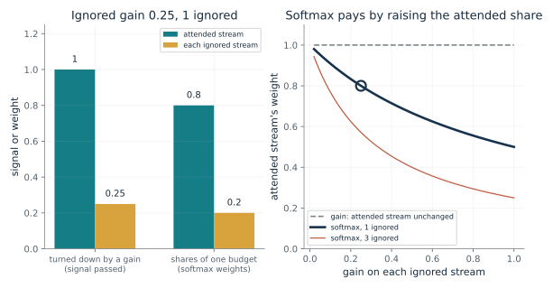
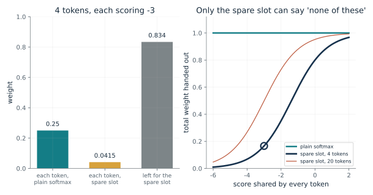
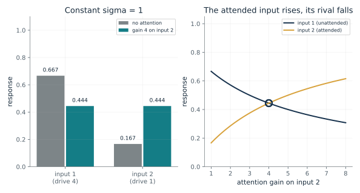
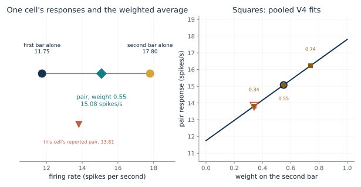
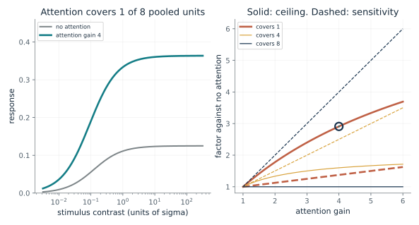
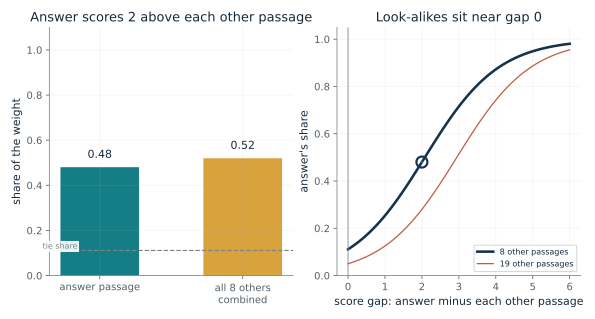
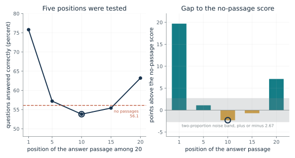

Ask what is being weighed, what each score or drive is, whether anything can give weight to nothing, and who supplies the gain: a cue or goal in the cortex models, the model's own comparison in a transformer. Use the softmax card for shares of a budget of one, the spare-slot card to see what changes when 'none of these' is allowed, the normalization card for gains and a constant, and the reported-result cards for position and look-alike effects. Say that a weight is a share, not a probability of truth.
“A language model is given 20 passages and only one contains the answer. How much of its attention weight can the answer passage keep if the others score close to it, and what would tell me the weights are not enough?”
Use mmi-ch05-what-to-notice with the companion's AI skill package. The illustrations below also work on their own.
Is turning a stream down the same as dividing a budget?
From Chapter 5, Listeners missed a switch to German, and the ignored ear may be turned down
If an ignored stream is turned down by a gain, what happens to the attended stream, and what happens when a softmax does the shrinking?
A gain acts on one stream at a time. A softmax acts on all the streams together because its denominator is the total of every stream's exponential. Lowering one score therefore moves weight to the others, and with more ignored streams the attended stream's share at the same gain is smaller.
Predict first: Two streams start with equal weight. Predict the attended stream's weight when the ignored stream is turned down to 0.25, under a gain and under a softmax whose weights must add to 1.

Gain on each ignored stream: 0.25 · Number of ignored streams: 1
What happens: Under a gain the attended stream stays at 1 and the ignored one drops to 0.25. Under a softmax the shares must add to 1, so the attended stream rises to 0.8 and the ignored one falls to 0.2. Raise the number of ignored streams to 3 and the attended share at the same gain falls to 0.571.
A gain of 0.25 makes each ignored stream quieter but leaves the attended stream at 1. In a softmax the shares must add to 1, so shrinking 1 ignored stream lifts the attended share to 0.8.
- Attended, gain model
- 1
- Each ignored, gain model
- 0.25
- Attended share, softmax
- 0.8
- Ignored total share, softmax
- 0.2
Whether selecting something means turning the rest down or dividing a fixed budget changes what the attended stream receives. The chapter's later models differ on exactly this point.
In Treisman's task two passages swapped ears partway through. A filter that blocked the ignored ear completely would predict no slips, and 15 of 18 listeners made at least one. The abstract reads this as a raised threshold, but the paper allows other accounts, such as occasional sampling of the ignored ear. It is one small laboratory study.
For a machine, turning something down is easy: multiply a stream by a number between 0 and 1. Nothing in these studies says a brain does it that way.
Show the calculation
Softmax with scores 0 and ln(0.25) for each ignored stream: attended share = 1 / (1 + 1 x 0.25) = 0.8.
The equations and symbols
- g_i
- a gain, a multiplier between 0 and 1 on stream i's own signal
- s_i
- the stream's signal in the gain model; its score in the softmax
- alpha_j
- weight of position j, a share of one whole
- n
- number of ignored streams (1 or 3 here)
Equal starting scores for all streams, a gain applied to a stream's own signal in one model and to its weight inside a softmax in the other. A trained attention head is far more complicated than a few scores, and no study here shows how a brain turns a stream down.
Check your understanding: Two streams have equal scores. Under a softmax, what weight does the attended stream get when the ignored stream's weight is scaled by 0.5? What does it get under a gain of 0.5 on the ignored stream?
Book source: Chapter 5, Listeners missed a switch to German, and the ignored ear may be turned down. Illustration C05-D01. Constructed example. The chapter's sentence that multiplying a stream by a number between 0 and 1 quiets it while a softmax can shrink one share only by raising another's. The scores and gains are made up. Scaling a weight by g is the same as lowering its score by ln(1/g), which is the companion's construction. Treisman's 1960 study had 18 listeners, 15 of whom made at least one wrong-ear slip.
What changes when a head gets a spare slot?
From Chapter 5, A model parked its spare weight on the first words
If every available score is poor, can the weights say so, with plain softmax and with a spare slot?
Softmax divides each exponential by the total of all of them, so the shares add to one by construction. A spare slot adds one more term to the total that no token gets. When the token scores are low their exponentials are small next to that 1, so the slot takes most of the weight and the tokens share the rest.
Predict first: Four tokens each score -3. Predict each token's weight and the total, first with plain softmax and then with a spare slot that scores 0.

Score shared by every token: -3 · Number of tokens: 4
What happens: Plain softmax gives each token 0.25 and hands out 1 in all. With a spare slot each gets 0.0415 and the total is 0.166, about 0.17, leaving 0.834 for the slot that holds nothing. Raise the common score to 2 and the total rises to 0.967.
Plain softmax gives each of 4 equal-scoring tokens 0.25 and always hands out a total of 1, whatever the score. With a spare slot each gets 0.0415 and the total is 0.166, which falls as the common score falls.
- Each token, plain
- 0.25
- Each token, spare slot
- 0.0415
- Total, plain
- 1
- Total, spare slot
- 0.166
If every available score is equally poor, the weights alone do not say whether any available source is good. The same largest share could belong to an excellent passage in one search and the least unsuitable in another.
The cortex models in the next demonstration add a constant to the bottom of the division, which lets a weak input stay weak. Plain softmax has no such constant.
Xiao and colleagues found that a model reading long text with only its last 1,024 tokens scored a perplexity of 5,158 on one book, and 5.40 once the first four tokens were kept; they call such tokens attention sinks and attribute them to the sum-to-one rule, a claim they support with removal and restoration tests, not direct measurement. Miller proposed adding 1 to the denominator in 2023 without testing it, and in small models the idea helped only partly. OpenAI's gpt-oss models carry a learned spare slot in each head.
Show the calculation
Plain: 1 / 4 = 0.25. Spare slot: e^(-3) / (1 + 4 e^(-3)) = 0.0415; total = 4 x 0.0415 = 0.166.
The equations and symbols
- s_j
- score of position j
- alpha_j
- its weight
- 1
- e raised to zero: a spare slot that scores exactly zero and never holds anything
- n
- number of tokens, all with the same score here
Equal scores, a spare slot that holds no value, and weights read as shares within one softmax, not as probabilities that a passage is true. The claim is about arithmetic and not a measurement of any trained model. A common score shift leaves plain softmax unchanged and changes the spare-slot weights unless the spare score is shifted too.
Check your understanding: Two tokens score 0 and 0. What does each get from plain softmax, and from a softmax with a spare slot, and what is the total?
Book source: Chapter 5, A model parked its spare weight on the first words. Illustration C05-D02. Formula. The chapter's constructed example (four tokens all scoring -3: a quarter each in plain softmax, about 0.04 each and about 0.17 in total with the extra 1) and the book's derivation 6 (scores 0 and 0: 0.5 each, or 0.333 each with a spare slot). The reported results are quoted in the sides and are from other people's studies, not recomputed here.
How does attention divide a response among rivals?
From Chapter 5, A monkey's cell and seven people fit a divided response
Two inputs compete for one response. What happens to each when attention boosts the weaker one?
Each response is its own boosted drive over the total boosted drive of everyone competing plus a constant. A strong rival raises the denominator and pushes its neighbors down, and attention boosts one numerator and the denominator together. The attended input therefore gains and each rival loses.
Predict first: With no attention the responses are 2/3 and 1/6. Predict both responses when the second input gets a gain of 4 and sigma stays at 1.

Attention gain on input 2: 4 · Constant sigma: 1
What happens: Both responses become 4/9, about 0.444: the attended input rises from 0.167 and its rival falls from 0.667. With sigma 0 the pair would be 0.5 and 0.5 and would add to 1, the softmax limit.
With drives 4 and 1, constant 1 and a gain of 4 on input 2, the responses are 0.444 and 0.444, against 0.667 and 0.167 with no attention. The constant keeps the total below 1 and lets weak inputs stay weak.
- Response, input 1
- 0.444
- Response, input 2
- 0.444
- Sum of responses
- 0.889
- Input 1 with no attention
- 0.667
This is the cortex-model counterpart of a softmax: the same dividing among rivals, with a constant that plain softmax lacks and a gain that comes from outside the inputs.
Reynolds and Heeger's model says attention multiplies a cell's input and the cell then divides by the total across its rivals. They call the model a mathematical abstraction, and the data identify no circuit.
Set sigma to zero, every gain to 1 and each drive to e raised to a score, and the formula is softmax. In a transformer the scores come out of the model's own comparison of positions, not from a cue or goal, so this is a mathematical correspondence and not evidence of a shared mechanism.
Show the calculation
Denominator = 1 + 4 + 4 x 1 = 9. R1 = 4 / 9 = 0.444; R2 = 4 / 9 = 0.444.
The equations and symbols
- R_i
- response of cell i
- d_i
- its input drive, nonnegative (4 and 1 here)
- g_i
- attention gain, above 1 for the attended input
- sigma
- a positive constant in the fitted model; 0 gives the softmax limit
Nonnegative drives and gains. The sum runs over every rival, including the cell itself. The data identify no circuit, and here the gains come from outside the inputs, from a cue or a goal. With sigma 0 the formula is undefined only if every boosted drive is zero.
Check your understanding: Drives 4 and 1, sigma 1, gains 1 on both. What are the responses?
Book source: Chapter 5, A monkey's cell and seven people fit a divided response. Illustration C05-D03. Formula. The chapter's worked numbers: drives 4 and 1, no attention, sigma 1 gives two thirds and one sixth, and a gain of 4 on the second input makes both four ninths. The formula simplifies Reynolds and Heeger's 2009 normalization model, which its authors call a mathematical abstraction.
How far did attention move a monkey's cell toward the attended bar?
From Chapter 5, A monkey's cell and seven people fit a divided response
One V4 cell fired 11.75 to a vertical bar, 17.80 to a tilted bar and 13.81 to both. How was the pair's response read, and what did attention do to the weights?
If the pair's response is a weighted average of the two single responses, the weight can be read off from where the pair falls between them. This cell's pair response is about a third of the way from the first to the second. Attention moved the fitted weight on the second bar from 0.55 to 0.74 when it was attended and to 0.34 when the first bar was.
Predict first: The cell fired 11.75 and 17.80 to the bars alone and 13.81 to both. Predict the weight on the tilted bar, and whether it is closer to 0, one third or 1.

Weight on the second bar: 0.55
What happens: This cell's own weight is 0.34, about a third of the way from the vertical bar's response to the tilted bar's. At the pooled weight of 0.74 the pair would be at 16.23, and at 0.55 at 15.08, but these are the pooled weights applied to this cell's responses, not what this cell did.
A weight of 0.55 on the second bar puts the pair at 15.08 spikes a second, between 11.75 and 17.80. The cell in the chapter fired 13.81, a weight of 0.34, about a third of the way.
- Pair response
- 15.08
- Weight on second bar
- 0.55
- This cell's own weight
- 0.34
- Implied gain ratio
- 1
A response that behaves like a weighted average with shifting weights is the cortex-side picture of selection, and it can be compared with the weights a machine's head assigns.
The study recorded in V2 and V4 of three rhesus monkeys. The shifts the paper highlights are larger because they come from the cells that changed significantly, and no person was recorded.
A weighted average of values, with weights that shift, is also what a head's blend of values is. That is a mathematical likeness and not evidence of a shared mechanism.
Show the calculation
Pair = (1 - 0.55) x 11.75 + 0.55 x 17.80 = 15.08. This cell: (13.81 - 11.75) / (17.80 - 11.75) = 0.34.
The equations and symbols
- r_1, r_2
- responses to the first and second bar alone, in spikes per second
- r_pair
- response to the two bars together
- w
- weight on the second bar; 0 gives it no share and 1 gives it the whole share
- implied gain ratio
- how much more gain on the second bar than at baseline would produce w, if w is a share g2 d2 / (g1 d1 + g2 d2); the companion's reading
The pooled weights come from fits across the analyzed V4 pairs, and the fit can include an offset. Attention effects varied across cells. In about a quarter of the V4 pairs the second bar significantly changed the response, but no significant attention effect was detected. Three monkeys; no person was recorded and no machine is involved.
Check your understanding: A cell fires 10 to bar A alone and 20 to bar B alone. With a weight of 0.3 on B, what does the pair fire?
Book source: Chapter 5, A monkey's cell and seven people fit a divided response. Illustration C05-D04. Reported result. Reynolds, Chelazzi and Desimone (1999) as the chapter reports it: one V4 cell's 11.75, 17.80 and 13.81 spikes per second, and pooled fitted weights on the second bar of about 0.55 with attention elsewhere, 0.74 with attention on the second bar and 0.34 with attention on the first. Applying the pooled weights to this one cell's responses is an illustration. The share rule is not in the paper.
Why does attention sometimes act like extra contrast and sometimes like a raised ceiling?
From Chapter 5, A monkey's cell and seven people fit a divided response
The normalization model predicts that attention can act like extra contrast or like a raised ceiling. How does one formula give both?
If the gain applies to every unit in the pool, it multiplies the numerator and the competing total together, which only rescales contrast. If it applies to the read-out unit alone, the competing total barely grows, so the ceiling rises with the gain.
Predict first: With a gain of 4, predict which choice, covering 1 of the 8 pooled units or all 8, raises the ceiling of the response, and which only shifts its sensitivity.

Attention gain: 4 · Pooled units that get the gain (of 8): 1
What happens: Covering only the unit itself raises the ceiling from 0.125 to 0.364, a factor of 2.9, and sensitivity by a smaller 1.38. Covering all 8 leaves the ceiling at 0.125 and makes the unit four times more sensitive: extra contrast.
With the attention gain 4 covering 1 of 8 pooled units, the ceiling goes from 0.125 to 0.364 and the sensitivity improves by a factor of 1.38. That is a raised ceiling with a smaller sensitivity change (response gain).
- Ceiling with attention
- 0.364
- Ceiling without
- 0.125
- Ceiling factor
- 2.91
- Sensitivity factor
- 1.38
Whether attention helps most at faint or at strong stimuli depends on how its reach compares with the stimulus. Seven people's accuracy fit one gain passed through a broad or a narrow field.
Herrmann and colleagues tested the prediction in seven people. With large patches in fixed places attention raised accuracy at the highest contrasts, and with small patches in uncertain places it helped most at middling contrasts. It is a human behavior and imaging study and identifies no circuit.
A trained attention head has no such pool of units. This is a specification of cortex-style normalization, not a claim about transformers.
Show the calculation
R = g c / (1 + c (k g + 8 - k)) with k = 1. Ceiling = g / (k g + 8 - k) = 0.364; half-response contrast = 1 / (k g + 8 - k) = 0.0909.
The equations and symbols
- c
- stimulus contrast, in units of sigma
- g
- attention gain on the attended units
- k, n
- units that receive the gain, and units in the competing pool (n = 8)
- c_50
- the contrast giving half the ceiling; smaller means more sensitive
Equal drives across the pool, a gain on k units including the one read out, and a response that is a function of that unit's contrast alone. Accuracy is not modeled. In the human data, response-gain-only could not be rejected for endogenous attention, and the model identifies no circuit.
Check your understanding: A gain of 2 covers all 8 units and sigma is 1. What are the ceiling and half-response contrast with and without attention?
Book source: Chapter 5, A monkey's cell and seven people fit a divided response. Illustration C05-D05. Model. The chapter's formula R = g d / (sigma + sum g d), applied by the companion to a pool of n equally driven units of which k get the gain. The pool, k and the gains are made up. Using the share of the pool that attention covers in place of the comparison of stimulus size with the span of attention is a simplification; the model's actual stimulus and attention fields are spatial.
Why would look-alikes cost more than random passages?
From Chapter 5, In 2023, facts in the middle of long prompts fared worst; look-alikes cost most
If one passage holds the answer and the others score near it, how much of the weight does the answer keep?
Softmax compares the answer's exponential with the exponentials of the others. A passage with a score close to the answer's has an exponential close to the answer's and takes about as much weight. One far below has a tiny exponential and takes almost none, so random passages cost little and look-alikes cost much.
Predict first: Eight other passages score exactly as high as the answer. Predict the answer's share, and then its share when they score 4 below.

Score gap, answer minus each other passage: 2 · Number of other passages: 8
What happens: With a tie the answer passage takes 1/9 = 0.111, the same as every other passage. At a gap of 4 it takes 0.872, and at a gap of 2 about 0.48. A look-alike near gap 0 takes nearly as large a share as the answer; one far below takes almost none.
With 8 other passages each scoring 2 below the answer, the answer takes 0.48 of the weight and the others 0.52 together. A look-alike near gap 0 takes nearly as large a share as the answer; one far below takes almost none. This is softmax arithmetic, not a test of why models failed.
- Answer passage's share
- 0.48
- Others' combined share
- 0.52
- Share if all tie
- 0.111
- Each other passage
- 0.065
A weight is a share, and a share is relative to whatever else is present. The same largest share could belong to an excellent passage in one search and the least unsuitable one in another.
In Alexander and Zelinsky's search task, 24 students looked for a teddy bear or a butterfly among six pictures. When no picture was the target, search took 1.48 seconds if all six looked like it and 0.84 if none did, with 3.16 pictures looked at against 1.51; errors stayed under 6 percent. The costs were time and eye movements, not accuracy.
Cuconasu and colleagues added eight passages to an answer passage for four small open models. In all 12 combinations of model and position, eight look-alikes cost more accuracy than eight random passages. For Llama2 with the answer near the question, accuracy was 56.4 percent alone, 56.1 with random passages and 37.5 with look-alikes.
Show the calculation
Answer share = 1 / (1 + 8 x e^(-2)) = 1 / (1 + 1.08) = 0.48.
The equations and symbols
- s_a
- the answer passage's score
- Delta
- how far each other passage scores below the answer (0 for a tie)
- n
- number of other passages (8 or 19 here)
- alpha_answer
- the answer passage's share of the softmax weight
All other passages share one score gap, and the weight is a share within one softmax that ignores other heads, layers and operations. Cuconasu and colleagues did not test this explanation, and a look-alike passage may hold a plausible wrong answer, which the paper does not separate from taking attention.
Check your understanding: The answer passage scores 2 above each of 8 other passages. What share of the weight does it get?
Book source: Chapter 5, In 2023, facts in the middle of long prompts fared worst; look-alikes cost most. Illustration C05-D06. Constructed example. The chapter's remark that softmax arithmetic suggests why look-alikes would hurt: a passage that scores close to the answer takes a share nearly as large, while one that scores far below takes almost none. The score gaps are made up. The reported results in the sides are from Alexander and Zelinsky (2011) and Cuconasu and colleagues (2024), and are not recomputed.
Where in a long prompt did the answer fare worst?
From Chapter 5, In 2023, facts in the middle of long prompts fared worst; look-alikes cost most
A model answered 75.8 percent of questions when the answer passage came first among 20 and 53.8 when it came tenth. How large are those gaps against having no passages at all?
The comparison that matters is not only first against last but each position against the score with no passages at all. Being worse than no passages means the added text hurt more than it helped at that position. The rough band shows that differences of a point or two are small next to the sampling noise of 2,655 questions.
Predict first: Predict which of the five positions was worst, and whether it fell below the score with no passages at all.

Position of the answer passage: 10 · Rough noise band: show
What happens: At the tenth position accuracy was 53.8 percent, 2.3 points below the 56.1 with no passages, while the first position was 19.7 points above and the last 7.1 above. The fifth and fifteenth are within about a point of the no-passage line, inside the rough band.
With the answer at position 10, the model answered 53.8 percent, 2.3 points below its no-passage score of 56.1. Only five positions were tested, so the curve between them is unknown, and the study measured answers, not attention weights.
- Accuracy at this position
- 53.8 percent
- Points above no passages
- -2.3
- Rough noise band (plus or minus)
- 1.89
- Gap outside the rough band
- yes
A long prompt does not give every position the same treatment, so where a fact sits can matter. The result shows that position can matter, not that it matters equally for every model.
The authors note the U shape resembles a pattern in human memory for lists, but the paper ran no human experiment.
GPT-3.5-Turbo (0613), one model tested in 2023. They measured answers, not attention weights, so nothing here ties the dip to attention sinks.
Show the calculation
Gap = 53.8 - 56.1 = -2.3 points. Rough band = 1.96 x sqrt(p(1 - p) / 2,655) x 100 = plus or minus 1.89 points for p = 0.561, ignoring that the same questions were used every time.
The equations and symbols
- A
- percent of questions answered correctly
- gap
- points above (positive) or below (negative) the no-passage score of 56.1 percent
- N
- number of questions, 2,655
- band
- a rough plus-or-minus range, the companion's own arithmetic, in points
One model tested in 2023 at five positions, so the curve between them is unknown. The study measured answers, not attention weights, and established no single cause; the authors offered only hypotheses, and the crowd of look-alikes is a second suspect. The band treats each score as the share correct among 2,655 independent questions, but the same questions were used every time, so a paired comparison can be tighter or wider.
Check your understanding: Compute the gap to the no-passage score at the first position and at the tenth.
Book source: Chapter 5, In 2023, facts in the middle of long prompts fared worst; look-alikes cost most. Illustration C05-D07. Reported result. Liu and colleagues' 2023 test of GPT-3.5-Turbo (0613) as the chapter reports it: 2,655 questions, 20 passages, one holding the answer and 19 look-alikes; 75.8, 57.2, 53.8, 55.4 and 63.2 percent at positions 1, 5, 10, 15 and 20, and 56.1 with no passages. The noise band is the companion's arithmetic, not a result from the chapter or the study.
Mathematical illustrations use the book's formulas with disclosed small examples. Each interactive choice shows a result computed from the same calculations as the chapter notebook. A simulation is not a measurement, and for a brain the mathematics is a model: a picture illustrates a result, and the assumptions determine its scope. Review copy, brain-computer partnership revision of 1 november 2026.